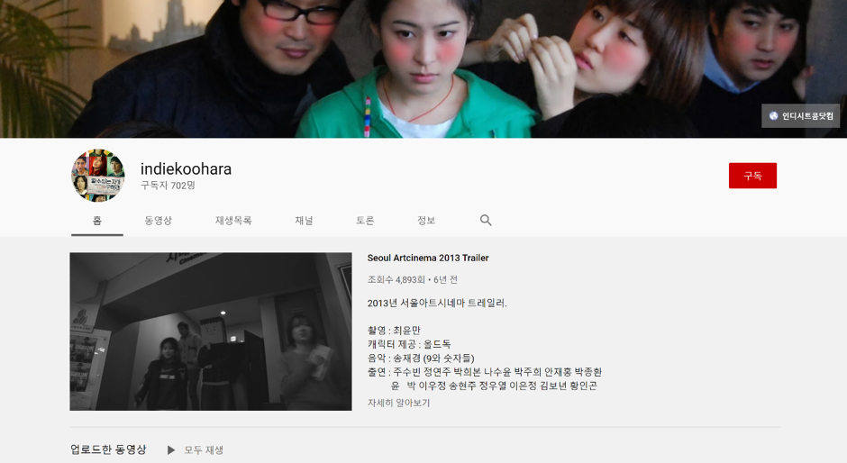
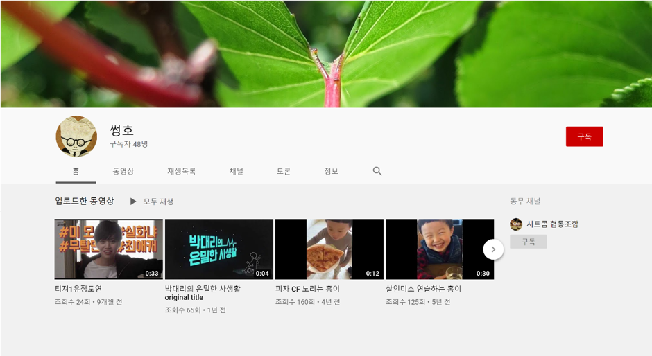
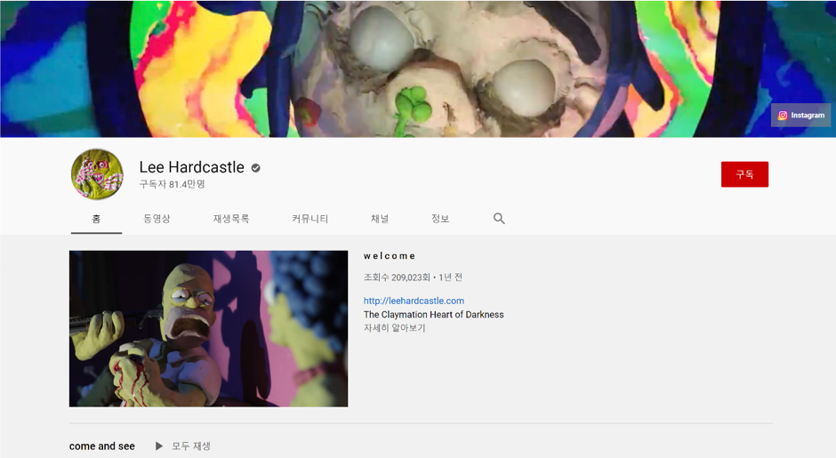
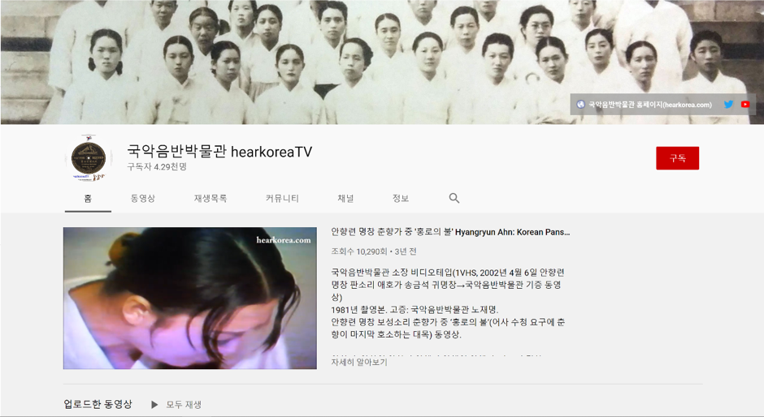
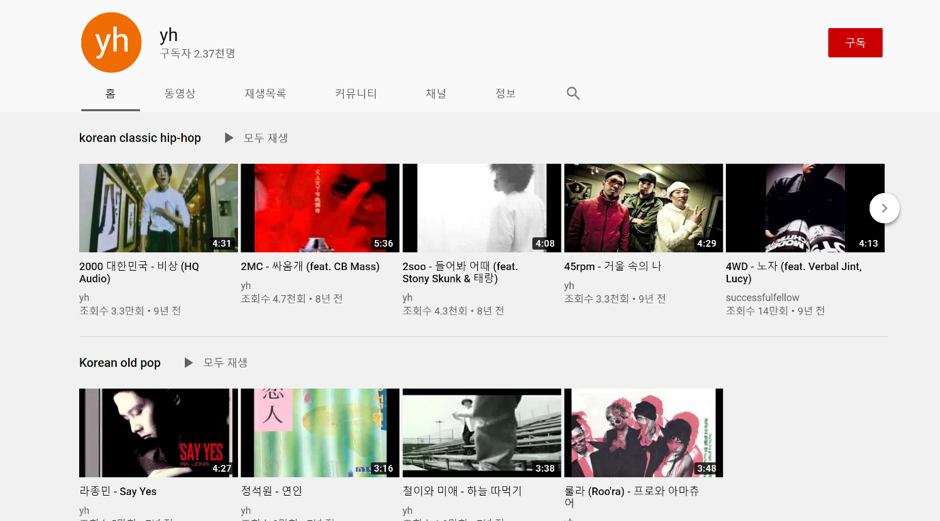

이상한 이상
‘이상’이라는 말을 듣고 꽂히게 된 건 정상적인 것과는 다른 것을 뜻하는 ‘이상하다’였다.
학창시절 나는 집에서든 학교에서든 이상한 녀석이라는 말을 자주 듣고 자라왔다. 고등학교 1학년 담임이자 동아리의 담당 선생님이 ‘이상한 사람이 세상을 바꾼다.’라고 하셨던 날이 있었다.
사실 저 말은
TED, 세바시 - TED, 세바시(세상을 바꾸는 시간,15분)은 모두 강연 프로그램
*‘TED’나 ‘세바시’ 같은 강연 프로그램에 나올 법한 멘트 같아 좀 오글거리긴 하지만 지금도 나는 그 말을 좋아한다. 그때 이후로 나의 이상함을 좀 더 정당화시키기로 했다.
나는 선생님이 하셨던 세상을 바꿀 그런 야망과 같은 ‘이상함’보다는 남들이 이상하다고 하는 그 ‘이상한 것’이 좋았다. 그런 과정 속에서 내가 좋아하는 것들을 더 잘 알게 된 것 같다.
그렇기에 그 ‘이상함’을 내가 좋아하는 유튜브를 통해 소개하고자 한다. 나열할 채널들이 남들이 보기엔 좀 꺼려질 수도 있겠지만, 개인적으로 좋아하는 채널들이다. 아는 척하는 것 같아서 낯부끄럽기도 하고 글재주도 형편없지만 가벼운 마음으로 재미있게 봐주었으면 한다.
-윤성호 감독의 ‘Indiekoohara’와 ‘썽호’ 채널

윤성호 감독은 VISLA 매거진에서 진행했던 ‘라디오 VSL’, 그곳에서 대구 출신
필르머 - (Filmer) 스케이터들이 스케이트보드를 타는 것을 담아내는 영상가들을 이르는 말.
*필르머 정충진이 게스트로 나와 윤성호 감독에 대한 이야기를 나눴을 때 알게 되었다.
독립 영화나 웹 드라마를 통해 주로 활동하고 있는 윤성호 감독은 웹 드라마가 유행하던 시기에 생소한 소재로 주목을 받았던 ‘대세는 백합’을 기획했고, ‘할 수 있는 자가 구하라’라는 제목의 영화와 시트콤을 감독했다.
작품 두 개의 이름만 들어봤지 당시 윤성호 감독에 대해서는 잘 몰랐다. 궁금해서 찾아보니 예전부터 소위 골 때리는 영상을 많이 찍어왔는데, 그중 가장은 “자매품 소스 '중산층 가정의 대재앙' 중 부자 면담”이라는 제목으로 ‘Indiekoohara’ 채널에 올린 영상이다. 이 영상은 정말 좋아해서 두고두고 본다.
특히 아빠와 아들이 집으로 경주를 하는 장면은 정말 미친 것 같다. 엄청나게 골 때리는 에너지를 느낄 수 있을 것 같다. 해당 채널엔 윤성호 감독의 작품인 ‘할 수 있는 자가 구하라’도 올라와 있으니 시간이 있다면 보는 걸 추천하고 싶다. 반가운 등장인물들이 많이 있어서 재미있게 봤다.
“자매품 소스 '중산층 가정의 대재앙' 중 부자면담

그의 개인 채널인 ‘썽호’라는 채널도 있는데 영상을 그리 자주 올리지는 않는다. 주로 개인적인 영상들이 많고, 영상도 몇 년에 하나씩 올린다.
그 가운데 정말 죽이는 영상들이 몇 개 있는데, 봐줬으면 하는 영상은 ‘우익 청년 윤성호 Seongho, the right wing boy’다. 윤성호 감독의 특유의 센스와 패기 그리고 뻔뻔함이 돋보인다. 영상에 달린 댓글을 구경하는 것도 재미있다
우익청년 윤성호 Seongho, the right wing boy
-잔혹한 클레이메이션을 만드는 애니메이터 ‘Lee Hardcastle’의 채널

리 하드캐슬 (Lee Hardcastle)을 알게 된 건 아마 고등학교 시절인 것 같다. 학교를 다녀온 뒤 방구석에서 평소와 같이 유튜브를 뒤지고 있었다.
내가 초등학교를 다니던 때엔 ‘해피 트리 프렌즈’나 ‘전기톱 메이드’등의 자라나는 새싹들이 보기에 썩 좋지 않은 잔인한
고어 - (Gore) ; 피, 응혈 등의 의미. 일반적으로 잔인한 것들을 이르는 말.
Non-Canonical - 1. 교회 법규 밖의; 성서의 정전(正典) 이외의. 2. (저서가) 이단적인.
릭 앤 모티 - (Rick and Morty)[2013.12- ] 미국의 성인 애니메이션. SF가 가미된 가족 드라마이다. 비유하자면, 심슨의 심화 버전 정도.
어덜트 스윔 - (Adult swim) 위의 릭앤 모티를 제작한 매체. 미국에서 2001년부터 심야 편성으로 시작한 성인 대상 편성 블록이다.
슬래셔 영화 - (Slasher Movie) 알프레드 히치콕 감독의 [싸이코]가 기원으로, 영화를 보는 사람들에게 공포를 조성하는 호러 영화의 일종이다. 슬래셔(Slasher)란 말 그대로 베고 죽이는 것이 난무한다.
오마주 - (Hommage) 영화 등에서 하는 일종의 존경의 표시. 다른 작품의 주요 장면이나 대사를 인용하는 것
*고어 애니메이션들이 유행했는데, 무슨 이유인지는 모르겠으나 갑자기 기억이 나서 간만에 검색해보았다.
Non-Canonical - 1. 교회 법규 밖의; 성서의 정전(正典) 이외의. 2. (저서가) 이단적인.
릭 앤 모티 - (Rick and Morty)[2013.12- ] 미국의 성인 애니메이션. SF가 가미된 가족 드라마이다. 비유하자면, 심슨의 심화 버전 정도.
어덜트 스윔 - (Adult swim) 위의 릭앤 모티를 제작한 매체. 미국에서 2001년부터 심야 편성으로 시작한 성인 대상 편성 블록이다.
슬래셔 영화 - (Slasher Movie) 알프레드 히치콕 감독의 [싸이코]가 기원으로, 영화를 보는 사람들에게 공포를 조성하는 호러 영화의 일종이다. 슬래셔(Slasher)란 말 그대로 베고 죽이는 것이 난무한다.
오마주 - (Hommage) 영화 등에서 하는 일종의 존경의 표시. 다른 작품의 주요 장면이나 대사를 인용하는 것
오랜만에 ‘전기톱 메이드’를 쓱 보다가 유튜브 연관 영상에 떠있는 리 하드캐슬의 영상을 발견했고, 그의 영상을 봤다. 그 자리에서 리 하드캐슬의 영상 대부분을 본 것 같다. 스토리나 연출이 지금까지 본 클레이메이션(찰흙, 지점토로 특정한 형태를 만들고 프레임별로 변화를 주어 한 프레임씩 촬영하는 애니메이션 기법) 중 가장 충격적이었다.
찰흙으로 디테일하게 잔인한 묘사를 하는 것도 놀라웠다. 리 하드캐슬은 보통 2~4개월에 한 번씩 꾸준하게 자신의 영상들을 올린다. 기다리는 건 아니지만 새로운 영상이 올라왔다는 소식을 들으면 어떤 영상이 올라왔을지 기대가 된다. 대부분의 작품들이 잔인한 묘사를 많이 하고 있으니 취향에 안 맞는 사람들은 안 보는 편이 좋을 것.
그의 유튜브 채널에 올라온 작품 중 가장 재미있게 본 고스트 버거(GHOST BURGER)를 추천하고 싶다. 스토리나 연출이나 아주 탄탄하니 좋아하시는 분은 한 번쯤 볼만하다.
리 하드캐슬은 *‘The Non-Canonical Adventures’ 라는 *‘릭 앤 모티’ 외전 시리즈도 제작했는데, *어덜트 스윔(Adult Swim) 의 로고가 영상 끝에 공포스럽게 나오는 것으로 보아 *어덜트 스윔의 광고가 아닐까 생각한다.
영상 대부분이 예전에 나온 B급 *슬래셔 영화 (악당이 등장해 여러 희생자들을 공격하는 잔혹한 내용의 공포영화)에서 *오마주 했기 때문에 리 하드캐슬이 어떤 영화에서 영향 받았는지도 알 수 있다. 이 밖에도 리 하드캐슬이 재해석한 전기톱 메이드와 심슨 시리즈, 클레이 캣 시리즈도 추천하고 싶다.
Lee Hardcastle - GHOST BURGER [full film]
대충 상황만 봐도 충분히 즐길 수 있지만,
자동 번역 기능을 쓰면 이해하는데 좀 더 수월할 듯 싶다.
-방대한 자료를 가진 ‘국악 음반 박물관 hearkorea TV’

국악 음반 박물관이라는 이름에 걸맞게, 방대한 자료를 자랑하는 채널이다. 판소리부터 한국의 대중음악, 심지어는 세계민속음악도 있다.
정말 많은 자료들이 있는데, 한국의 음악을 알아가기 위해 정말 보석 같은 채널이라 생각한다. 한국 음악을 이야기할 때 빼놓고 이야기할 수 없는 존재인
신중현 - [1938-] 기타리스트이자 가수. 한국 락 음악의 아버지.
*신중현
의 회고와 음악 견해에 대한 인터뷰, 음반 전문점을 운영하시는 사장님의 회고담, 민속 음악이나 불교 음악의 명인들과 한 인터뷰도 있다.
Nat King Cole - [1919-1965] 미국 재즈 피아니스트, 가수 겸 배우. 수많은 히트곡을 만든 재즈계 거장. 그의 딸인 나탈리 콜 또한 가수로 활동 중이다.
심지어 1964년
*‘Nat King Cole’
이 내한 당시 불러, 공연 자료로만 남아있는 ‘아리랑’과 멕시코의 ‘Olivia de Montenegro’가 부른 ‘아직도 그대는 내 사랑’같은 굉장히 희귀한 음악들을 유튜브 채널에서 들을 수 있다.
‘국악 음반 박물관’이 가지고 있는 자료 중 가장 좋아하는 건 *“김현식
김현식 - [1958-1990] 한국의 가수. 비주류로 분류되던 음악을 주류로 끌어올린 상징적 인물로 평가받는다.
7인치 음반 - 12인치 레코드 판보다 작아 적은 양의 음악을 담은 음반. 주로 싱글을 내기 위해 사용된다.
'사나이 노래'(Rock & Blues 버전) 1984년 녹음”이라는 제목으로 올라온 영상이다. 김현식의
*7인치 싱글 음반
으로 발매되어 목소리나 창법이 우리가 아는 김현식과는 조금 다르고, 생전 하나만 냈던 7인치 음반인지라 상당히 귀해서 고가에 거래가 된다고 한다.
7인치 음반 - 12인치 레코드 판보다 작아 적은 양의 음악을 담은 음반. 주로 싱글을 내기 위해 사용된다.
귀한 음반이라 음악을 들어볼 기회도 알 기회도 없는데, 이 영상을 통해 김현식에게 이런 음반이 있었다는 것에 놀랐던 기억이 난다. 사나이 노래에 대해 더 알아보니 ‘동해 백주’라는 30도짜리 고량주의 광고음악으로도 쓰였다고 한다.
김현식 '사나이 노래'(Rock & Blues 버전) 1984년 녹음
여러모로 김현식의 이미지와 잘 어울리는 음악 같다. 담배 전 내가 진동하는 방에서 참x슬 클래식에 새x깡 먹으면서 들으면 좋지 않을까.
- ‘yh’

나는 힙합을 좋아한다. 고등학교 수학 과외 선생님을 통해 ‘가리온’, ‘피타입’,
마스터 플랜 - 한국의 음악 레이블. 힙합 라이브 클럽이 시초이며 가리온, 주석, 다이나믹 듀오 등이 해당 클럽에서 데뷔했다. 이후 레이블로서 성장.
BLEX - Mc메타가 관리했던 일종의 통신 동호회. 앨범 제작 등 다양한 활동을 하였다.
‘UMC’의 음악을 접했고, 더 나아가
*‘마스터 플랜’과 *‘BLEX’
등의 존재도 알게 되고, 즐기게 되었다. 학교에선 이상한 노땅 힙합 듣는다는 소리도 들어보았다.
BLEX - Mc메타가 관리했던 일종의 통신 동호회. 앨범 제작 등 다양한 활동을 하였다.
그 선생님은 ‘마스터 플랜’의 엄청난 팬이었는데, 정작 자기가 스무 살이 된 후 ‘마스터 플랜’이 흐지부지된 것을 보고 아쉬웠다는 이야기를 했다.
그 이후로 나도 ‘마스터 플랜’에 대한 궁금증이 생겼고, 더 알아보게 되었다. 직접 그 시대를 살며 느끼지는 못했지만 남아있는 자료나 음악을 통해 느끼고 생각하게 된 ‘마스터 플랜’은 ‘주석’의 말처럼 천하무적이다.
‘ILL SKILLZ’라는 팀이 있었다. ‘마스터 플랜’이 죽여줬을 당시를 추억하는 형님들의 이야기를 빌리자면 ‘ILL SKILLZ’가 한국 힙합의 간지 대장이었다고 이야기한다. 지금 들어도 멋진 음악, 몇 없는 그들의 사진을 보아도 멋있다는 생각밖에 안 든다.
실제로 ‘ILL SKILLZ’의 멤버 ‘MAKE-1’은 국내외 스트리트 패션 신(scene)에서 형님 중의 형님 다운 활동을 많이 보여주고 있고, 나 역시 그의 브랜드인 ‘오리지널 컷’을 비롯해 그가 관여한 브랜드를 좋아한다.
‘ILL SKILLZ’의 영상이나 음악을 찾으면서 그들이 ‘ILL SKILLZ’라는 이름으로 낸 음악이 몇 개 없다는 사실을 알게 되었다.
‘822’라는 이름으로 ‘ILL SKILLZ’와 ‘미니맨’,
스니커 유튜버 - 스니커즈를 다루는 유튜버
*스니커
유튜버로 활동하고 있는 ‘수파사이즈’, 그리고 ‘마스터 플랜’의 프랜차이즈 스타 ‘주석’이 함께한 ‘그만해라’라는 노래가 있는데, 진짜 멋지니까 꼭 들어보길 바란다.
822 - 그만해라 (Enuff iz Enuff)
이 영상도 영상이지만 흥미로운 건 이 영상을 올린 사람이다. ‘yh’라는 이름으로 영상을 올리고 있고 주로 2000년 전후의 주옥같은 한국 힙합이 올라와 있다. 그 밖에 다른 영상으로는 *KOF
KOF - The King of Fighters의 약자
같은 대전 격투 게임이나 고전 게임 플레이 영상이 있다. 게임과 힙합을 좋아하는 사람 같아서 괜히 반갑다.
‘노브레인의 굴욕’이란 이름으로 각종 SNS나 온라인 커뮤니티에서 회자되던 영상을 알고 있는가? 축구 경기를 보러 온 ‘노브레인’의 보컬 ‘이성우’를 보고 해설 위원이 “일본의 코미디언들이 응원을 왔군요.”라고 말하자 다른 해설 위원이 “네.. 크라잉넛이라는 가수들도 와 있구요.”라고 쐐기를 박아버리는 영상이다.
잔잔하지만 강한 임팩트의 영상. 그 영상을 유튜브에
아카이브 - (archive) 데이터를 보관해두는 것을 의미한다.
*아카이브 한 채널이 바로 ‘yh’이다. 게임이랑 힙합을 좋아하고 인터넷을 열심히 할 것 같은 사람이다. 예상하기로, 나보다 나이는 많겠지만 나랑 비슷한 구석이 있는 사람 같아서 이 채널이 좋다.